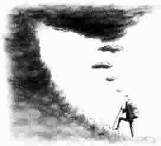

思想者的色拉
●文如水
拒绝金子
乌托邦这个词最早出现在英国政治家、作家托马斯·莫尔爵士的作品《乌托邦》中。这部1516年问世的著作描绘了一个“不存在的地方”——“乌托邦”，那儿是人类的理想社会：金子一文不值，只能用来做夜壶；钻石和珠宝是孩子们的玩具；社会公正和谐，臻于完美。
不但在作品里，莫尔爵士在现实生活中也一直奉行完美社会的守则。一次，某商人有求于莫尔爵士，便送给他一副装满金子的手套。爵士收到礼物后，把金子倒在地上对商人说：“我更喜欢不带衬里的手套。”
另一次，有个军人被陷害，幸好遇到了公正无私的莫尔爵士，才保住清白。事后军人到爵士家道谢，并献上一只价值连城的宝石酒杯。当时爵士正在吃饭，为了不让送礼的人尴尬，莫尔立刻在酒杯里斟满酒说：“为您的健康干杯。”举杯一饮而尽，然后又自然而然地把酒杯递还给了军人。
幸运的盲人
一天，在上下班的高峰期，乔治·席林(美国爵士乐钢琴演奏家和作曲家，盲人)站在曼哈顿一个车流量非常大的十字路口，等待有人过来帮助他过马路。
等了一会儿，有人轻轻拍了拍他的肩膀。不幸的是，这个人也是个盲人，他和席林一样，也在寻找别人帮他过马路。
席林怎么做的呢？回想起那件事，席林笑了：“我做了一件我一生中最为兴奋的事情——我带着他过了马路。我觉得我是个幸运的盲人，以前都是别人帮我过马路，而我终于有机会帮别人了。”
意 义
著名影星克拉克·盖博有这样一桩轶事。某日下午，一位朋友携幼子登门拜访。小男孩坐在地板上，守着一大堆玩具车自娱自乐，他假装一场激烈的赛事正在巨大的环形跑道上进行。其实，那跑道不过是以一个小金人为中心的想象的圆圈而已。那个小金人正是克拉克·盖博于1934 年荣获的奥斯卡金像奖。
当孩子的妈妈示意告辞时，小家伙恋恋不舍地指着那尊金像问：“我能把这个带走吗？”大惊失色的母亲连忙呵斥儿子：“快把它放回去！”盖博把金像递给孩子，说道：“对我而言，把奥斯卡金像留在身边没有任何意义，获得它的过程才有意义。”
0.005毫米的艺术
“一到靶场，你会发现靶心看上去永远跟句号一般大小。但是，你若想取胜，就必须尽可能打中这个微小目标。所以，你必须全神贯注，学会控制自己，做到纹丝不动。我们要从50米开外瞄准目标，这相当于站在半个足球场之外朝一枚硬币射击。因此，必须学会静止不动。不能抑制呼吸，这会使你因缺氧而致身体摇晃，要控制呼吸。我必须练习长跑，使自己的心率保持在60 次左右。通过艰苦训练，我将每分钟心跳数降下来，但脉搏跳动幅度大了，几乎每一次搏动都让我身体剧烈起伏。所以，必须选择射击时机。60次的心率能确保两次心跳之间有1秒钟间歇，这给扣动扳机创造了绝佳机会。在比赛前12小时要停止进餐，以免消化时肠胃蠕动影响射击准头。在经历了上述细致严苛的训练之后，你就获得了某种控制力，但这还只是技术上的。此外，你必须学会控制场上情况，学会判断复杂的比赛环境：风向、风速、雾气、周遭的声音……你把这一切做得完美无缺之后，你还只是解决了问题的80%。剩下你要做的就是稳定心神，做到全神贯注……若发生0.005毫米的偏差，射出去的子弹就会偏离靶心，落入外面的一环；若偏差稍大，会导致完全脱靶。必须保持绝对的全神贯注……这是一门0.005毫米的艺术。”
这是奥运会男子小口径步枪冠军兰尼·巴沙姆曾给人们讲述射击术的精髓，而所有的一切都在这0.005毫米之间。
公 平
去年我应本市某大学邀请，担任演讲比赛的评委。参赛选手们每人领取一张纸条，根据纸条上所写的主题演讲3分钟。演讲的次序是通过抽签决定的，当抽到第一位的选手走上台时，我发觉他看起来非常不满。
“同学们，尊敬的评委们，”他响亮地说，“这是一场不公平的比赛！”我和其他评委们纷纷抬起头，惊讶地看着他。
“我领到这张纸后，”他继续说道，“只有几分钟准备时间，排在我后面的选手准备时间却充裕得多。这是不公平的！”
说罢他便走下讲台，冲出了大厅。没有人在意他，比赛顺利地进行了下去。比赛结束后我离开时又遇见了他。
“谁说生活总是公平的？”我微笑着问他。他震惊地看着我，于是我邀他一起走到停车场。
“生活，”我告诉他，“也意味着与不公平斗争，最终取得胜利！你读汽车杂志吗？”
“是的，”他急切地说，“我读。”
“你见过新车上市时发布的统计数字吗？诸如速度、扭矩、变速系统、马力……”
“是的。”他点点头。
“在这些数字后面还有一项免责条款，他们声明所有数据基于‘理想’路况！”
“是的。”他又说。
“难道路况永远是‘理想’的吗？”我问他，“最热销的车，是那些不管路况好坏，都能提供完美动力、速度和耐久性的。那样的车才是真正的赢家！”
我们已经走到我的车前，当我上车时他仍站在旁边。“不要总是寻求理想的比赛条件。”我说，“在不公平的条件下也要坚持战斗，做一个真正的赢家！”
当我驶离时，从后视镜中看见他正微笑着挥手。我知道从此以后他会与不公平斗争。
(徐力摘自《当代青年》2006年第11期上半月，王青图)